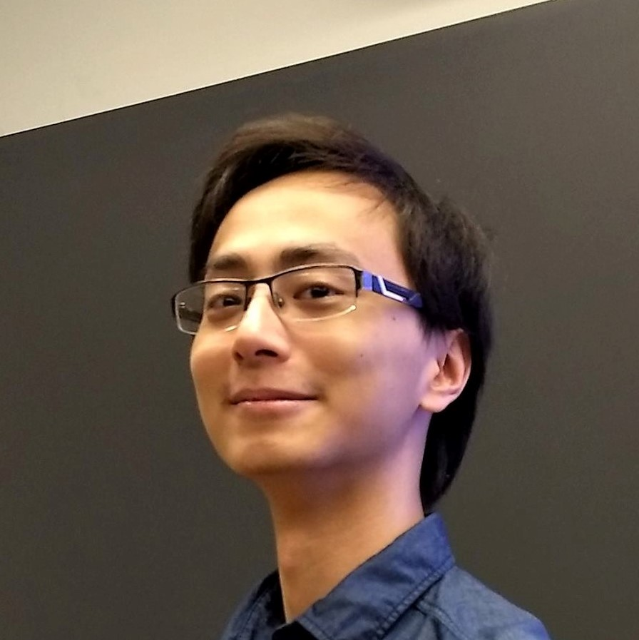

|
Dzung V. Pham
I am a Machine Learning engineer at Facebook, Inc. My job is protect over 1 billion users of Facebook Marketplace from fraud, scam and harassment by leveraging the power of Machine Learning. The highly adversarial nature of this space makes for an exciting and
dynamic work environment, which I truly enjoy.
I graduated from Williams College (magna cum laude) in 2020 with a B.A. in Computer Science and Statistics (with Honors). I was fortunate to be advised by Prof. Richard De Veaux for my
senior thesis. I also had the pleasure of working closely with Prof. Daniel Barowy and Prof. Duane Bailey.
Email /
CV /
Github /
LinkedIn
|

|
|
I have been playing the classical guitar unprofessionally since grade 9, with a bit of flamenco and fingerstyle here and there. The proudest piece in my repertoire is Koyunbaba by Carlo Domeniconi. I had the honor of studying under Robert Phelps - a true professional guitarist.
Recently I got addicted to chess (following the Queen's Gambit craze). You can find me on chess.com.
|
This website was based on here.
|
|